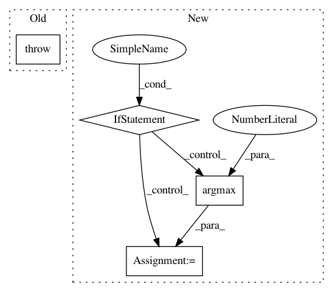

57d46b39765a5fe33a7f8d964387bb479619005b,art/classifiers/tensorflow.py,TensorFlowV2Classifier,fit_generator,#TensorFlowV2Classifier#Any#Any#,807
Before Change
TensorFlow and providing it takes no effect.
:type kwargs: `dict`
raise NotImplementedError
def class_gradient(self, x, label=None, **kwargs):
Compute per-class derivatives w.r.t. `x`.
After Change
from art.data_generators import TensorFlowV2DataGenerator
// Train directly in TensorFlow
if isinstance(generator, TensorFlowV2DataGenerator) and self.preprocessing_defences is None \
and self.preprocessing == (0, 1):
for _ in range(nb_epochs):
for i_batch, o_batch in generator.dataset:
if self._reduce_labels:
o_batch = np.argmax(o_batch, axis=1)
self._train_step(i_batch, o_batch)
else:
// Fit a generic data generator through the API
super(TensorFlowV2DataGenerator, self).fit_generator(generator, nb_epochs=nb_epochs)
def class_gradient(self, x, label=None, **kwargs):
Compute per-class derivatives w.r.t. `x`.
In pattern: SUPERPATTERN
Frequency: 3
Non-data size: 4
Instances
Project Name: IBM/adversarial-robustness-toolbox
Commit Name: 57d46b39765a5fe33a7f8d964387bb479619005b
Time: 2020-03-04
Author: beat.buesser@ie.ibm.com
File Name: art/classifiers/tensorflow.py
Class Name: TensorFlowV2Classifier
Method Name: fit_generator
Project Name: tensorflow/cleverhans
Commit Name: 953111b5e72effeed6ed1ae1294ab0703d828e89
Time: 2017-03-24
Author: rfeinman16@gmail.com
File Name: cleverhans/attacks.py
Class Name: SaliencyMapMethod
Method Name: generate_numpy
Project Name: tensorflow/models
Commit Name: dfe2a43fb378b557f3dfc4315417afb291cd16b7
Time: 2018-09-25
Author: aman2930@gmail.com
File Name: official/mnist/mnist_tpu.py
Class Name:
Method Name: model_fn